01 · Design work
多元設計實作，快速瀏覽。
目前共收錄 45 件 Behance 作品，依原始頁面順序編號。可先快速瀏覽，再展開完整清單挑選想深入閱讀的作品。
Life is great
國旅卡活動網站設計
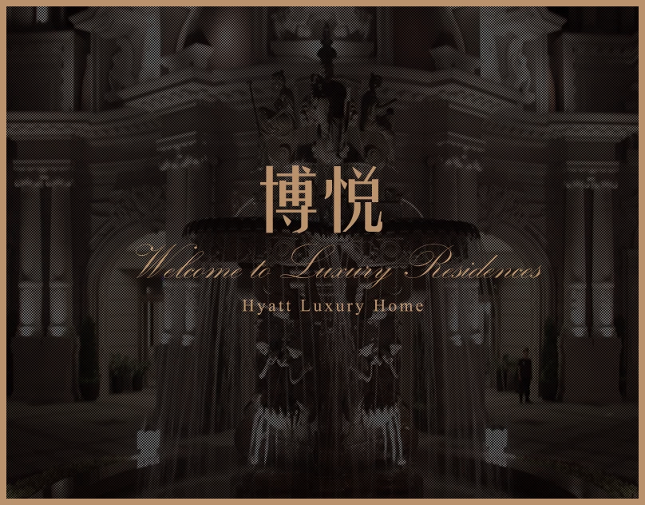
Hyatt Luxury Home
博悦官方網站規劃設計
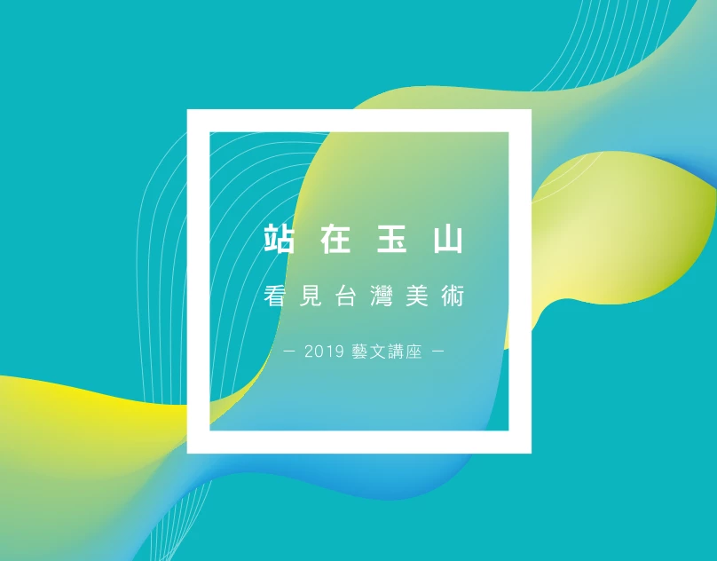
Stand at E.SUN
看見台灣之美活動網站
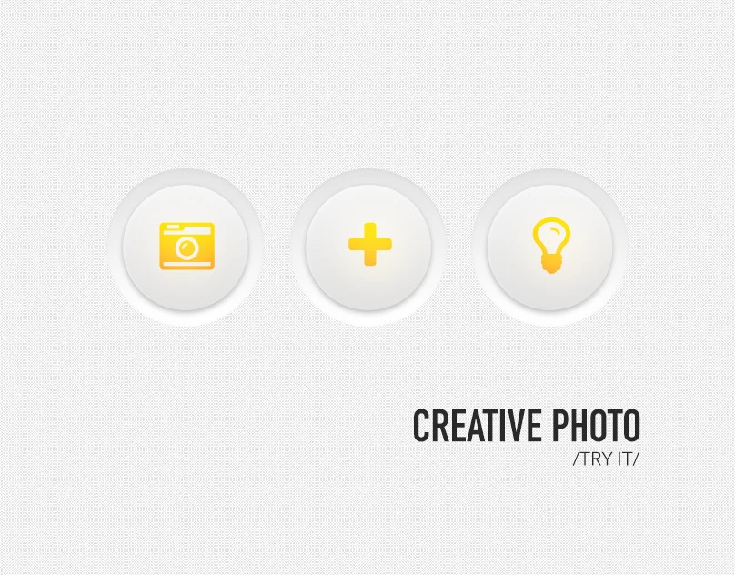
Creative photo
User Interface Design
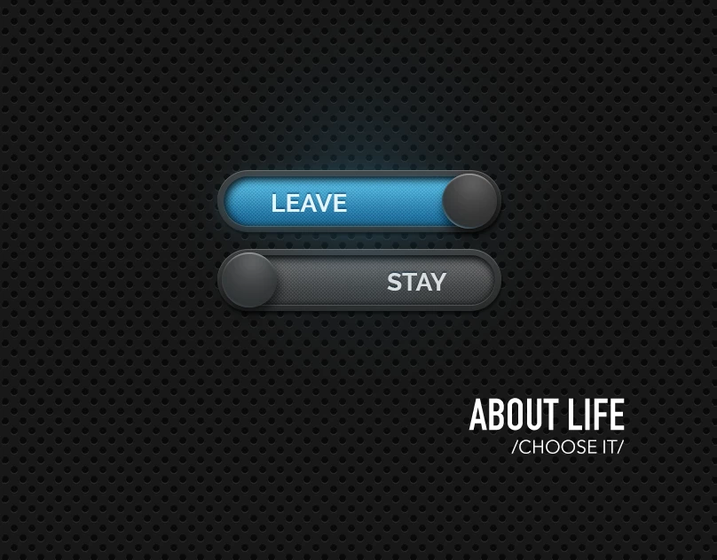
About Life
User Interface Design
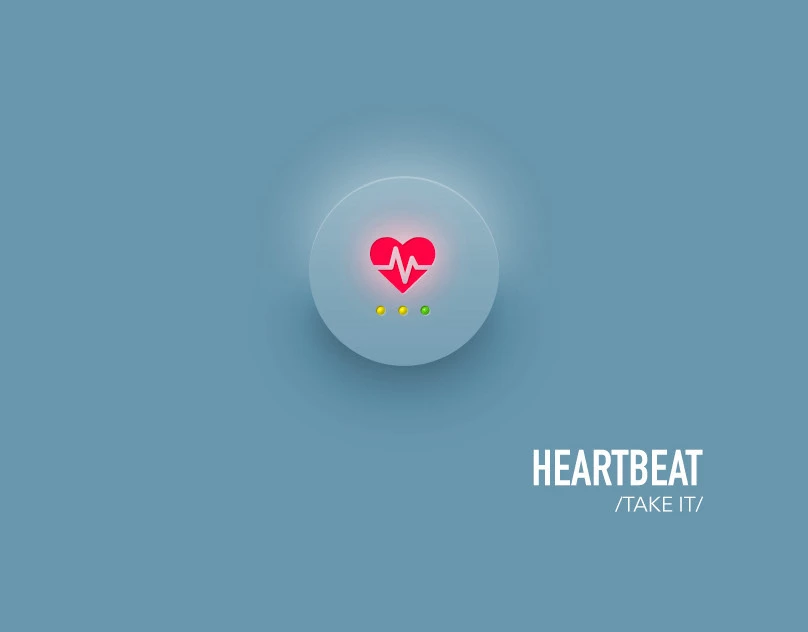
HEARTBEAT
User Interface Design
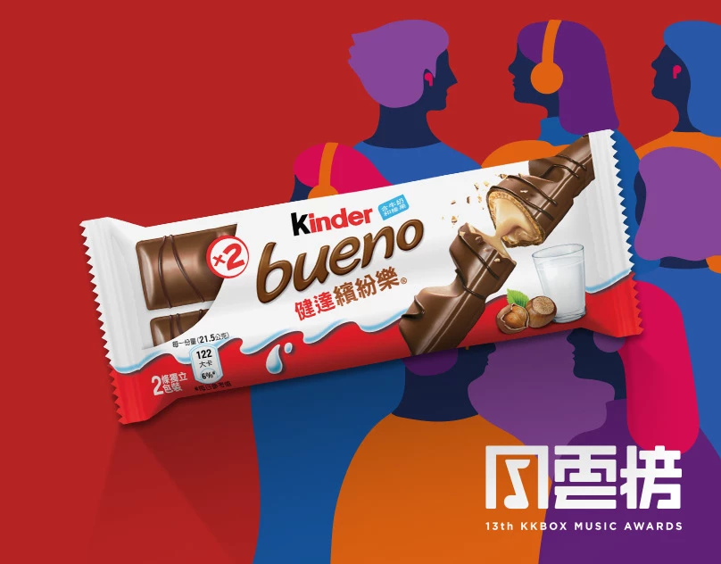
Kinder bueno
Event Website & Visual Design
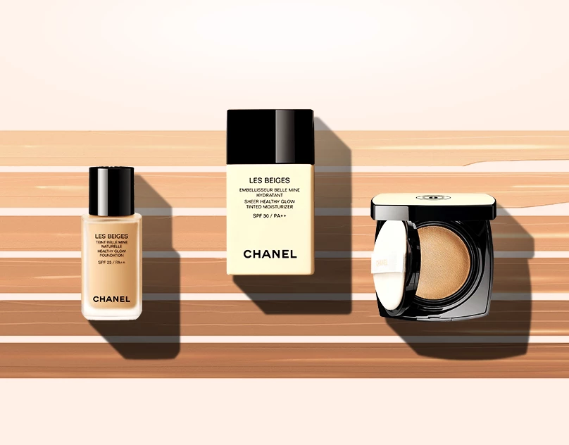
CHANEL LES BEIGES
Event Website & Visual Design
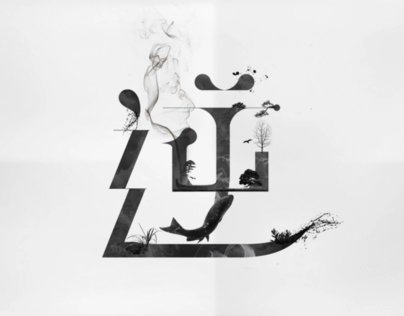
Converse & Inverse
Typographic Practice
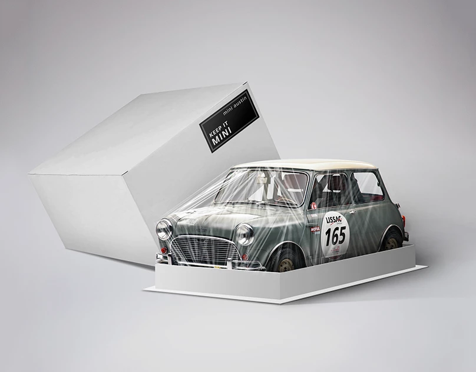
About Advertisement
Photo Retouching Practice
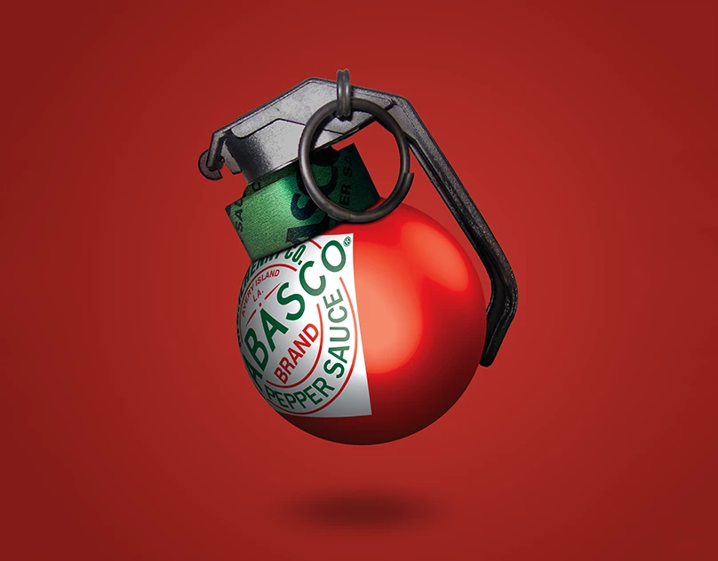
How to be creat!ve
Photo Retouching Practice
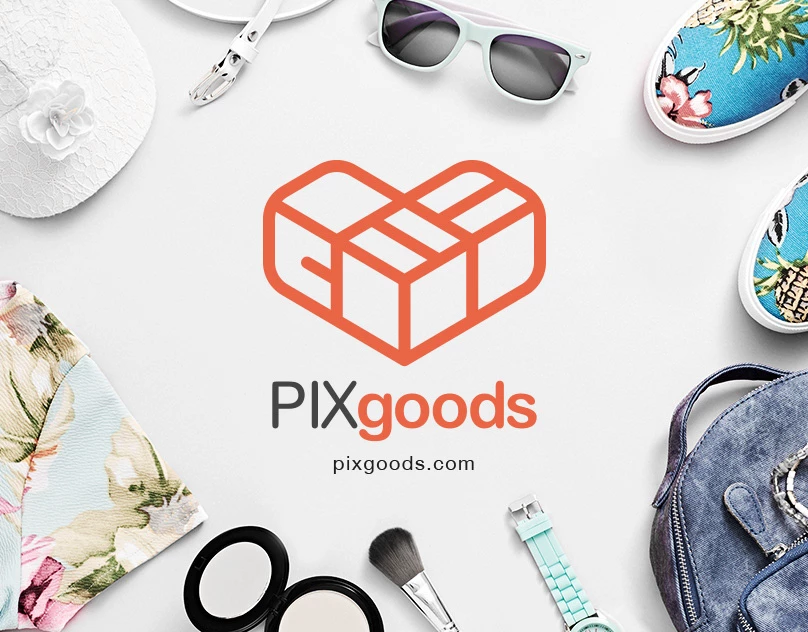
PIXgoods
Corporate Identity Design
03 · Capabilities
設計是核心，技術讓它真正發生。
依品牌與溝通目標整合資訊架構、介面、活動概念與視覺製作，讓每種媒介都有一致而清楚的表達。
01
Web & UI Design
從內容層級、網站架構到響應式介面，建立兼顧品牌感受與實際使用的數位體驗。
- Website planning
- Responsive UI design
- Interactive prototype
02
Campaign & Visual
把活動主題轉化為網站、廣告與社群視覺，讓核心概念在不同接觸點保持辨識度。
- Campaign website
- Art direction
- Photo retouching
03
Brand & Marketing
透過識別、排版與影像處理建立視覺個性，並延伸到電商、時尚與品牌應用。
- Brand identity
- Typography
- Graphic & digital art
04 · About
跨越產品、視覺與技術的設計者。
我是 Horace，一位橫跨網站、UI、活動視覺與品牌識別的 Senior UI/UX & Visual Designer。
十多年來參與媒體、金融、品牌與數位產品專案。我擅長把抽象概念整理成清楚的內容架構與視覺語言，從主視覺、互動介面一路協作到響應式實作。
近年也把生成式 AI 納入研究、視覺探索與原型流程；重點不是追逐工具，而是更快提出可討論、可驗證的方案。
查看完整履歷05 · Experience
從品牌視覺走向完整產品體驗。
-
2020.05 — Present

Xtars Live · 藝想科技
UI/UX Designer
主導網站與 App 的介面及體驗設計，建立可持續維護的產品規範，並與產品及工程團隊協作落地。
-
2019.09 — 2020.03

E.SUN Bank · 玉山銀行
Senior Web Designer
負責活動與響應式網站設計，並主導數位品牌 e.Fingo 的 CI 視覺系統。
-
2018.06 — 2019.05
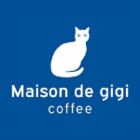
Maison de gigi · Osaka, Japan
Working Holiday & Barista
累積跨文化服務與協作經驗，於大阪取得 JLPT N3，拓展語言與設計視野。
-
2013.07 — 2018.04
PIXNET · 優像數位媒體
Senior Web Designer
參與品牌活動、部落格產品與大型合作專案，建立視覺規範並持續改善內容體驗。
06 · Contact